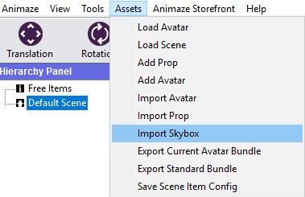
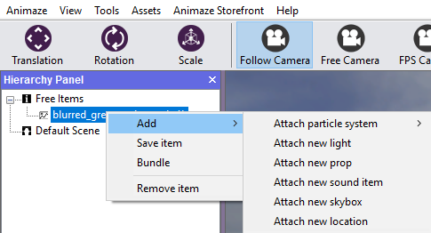
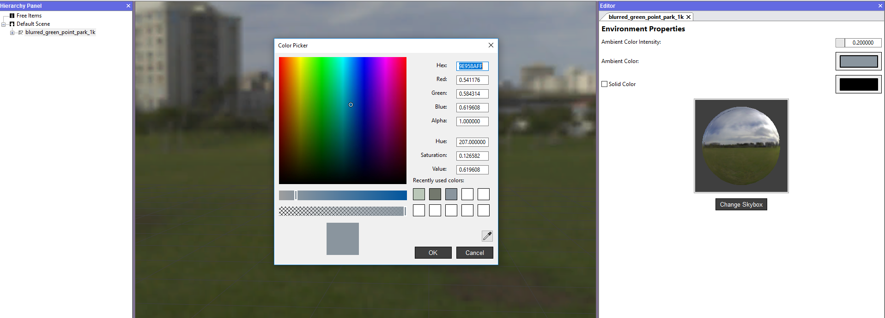
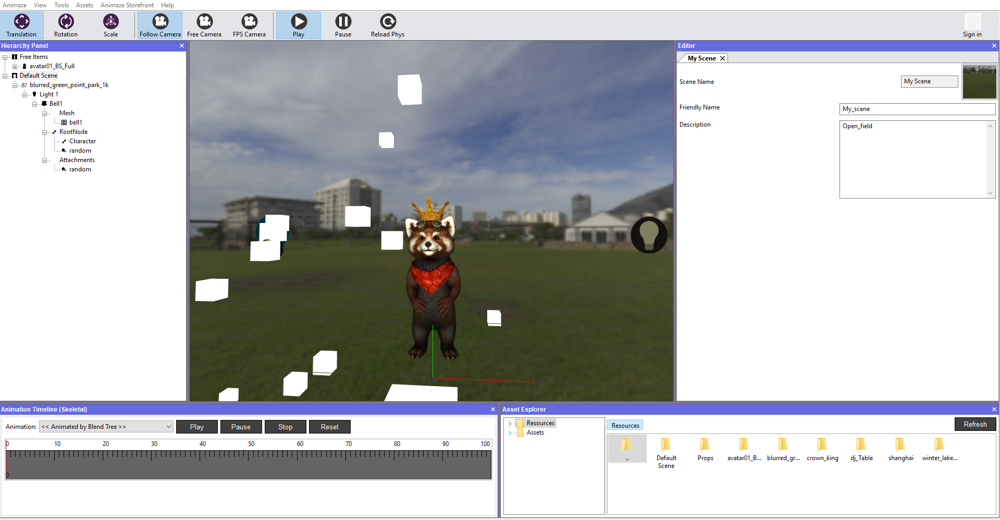
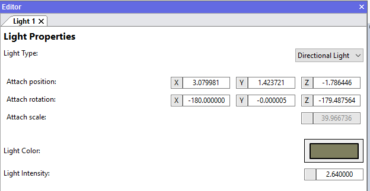
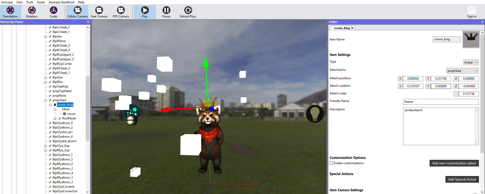
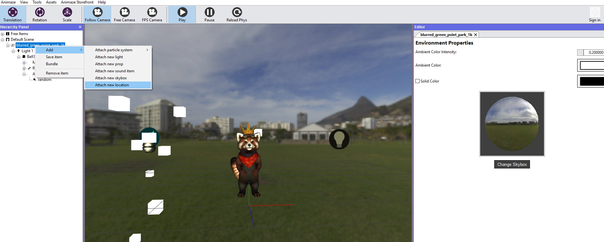
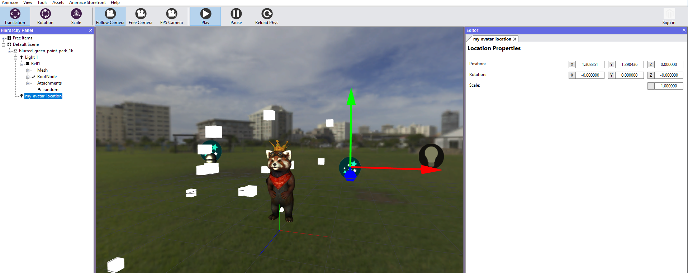
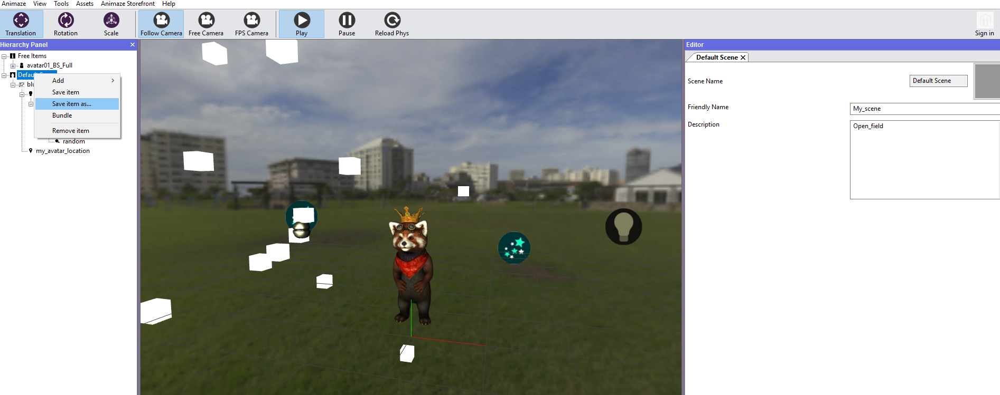

How do I create an Animaze Scene?
- 3D props
- particle systems
- sounds (e.g. ambient sound)
- lights
- skybox
- avatar spawn locations – locations you want the newly spawned avatars to be moved to.
To create a scene, follow the steps below:
- Start by importing (or loading, if you have previously imported it) a skybox from the Assets menu

Note!
All your imports will be found within the Free Items location in the Hierarchy Panel, but you will move them by dragging them in the Default Scene in order to save it as one.
- You can add scene items to your newly imported Skybox by right-clicking on it and selecting what you want to attach

- The environment properties can also be modified in the Editor Panel, by setting Ambient Color Intensity value and Ambient color, which will open a Color Picker dialog box for you to choose

For explanatory purposes, we loaded avatar Fluffo, a light, the crown prop for his head, and a bell to which we added a random particle system:

- to add the light in your scenery, simply right-click the skybox in the Hierarchy Panel and select Add new light
- in the Editor Panel you can modify the type, position, rotation, scale color and intensity of the light

- the crown must be attached to the avatar, dragged over the destined bone, in this case we dragged it over propHead

- do not forget that the avatar is not saved in the scene, even if it is attached at runtime, when saved to disk it will be removed. To have the avatar spawned in a certain location in the scene, right-click on your skybox in the Hierarchy Panel and select Add New Location

- a gizmo will be added in the Scene, which you can place it anywhere

- Go to the Hierarchy Panel when you are done customizing it and right-click on the Default Scene, then select Save item or Save item as…
